Think Linear Algebra is not for sale yet, but if you would like to support this project, you can buy me a coffee.
A Day At the Track#
Click here to run this notebook on Colab.
Show code cell content
%load_ext nb_black
Show code cell content
from os.path import basename, exists
def download(url):
filename = basename(url)
if not exists(filename):
from urllib.request import urlretrieve
local, _ = urlretrieve(url, filename)
print("Downloaded " + local)
download("https://github.com/AllenDowney/ThinkLinearAlgebra/raw/main/utils.py")
Show code cell content
import numpy as np
import pandas as pd
import matplotlib.pyplot as plt
from utils import decorate
Section#
import pint
ureg = pint.UnitRegistry()
pace = 8 * ureg.minute / ureg.mile
pace
8.0 minute/mile
speed_mph = (1 / pace).to(ureg.mile / ureg.hour)
speed_mph
7.5 mile/hour
speed_mps = (1 / pace).to(ureg.meter / ureg.second)
speed_mps
3.3528 meter/second
straight = 84.39
circumference = 400 - (2 * straight)
circumference / 2
115.61
radius = circumference / 2 / np.pi
radius
36.799805941708044
from scipy.interpolate import interp1d
key_t = np.array([0, 2, 40])
key_v = np.array([0, 3.8, 3.2])
velocity_linear = interp1d(key_t, key_v, kind="linear", fill_value="extrapolate")
ts = np.arange(41)
vs = velocity_linear(ts)
np.mean(vs)
np.float64(3.3756097560975604)
plt.plot(ts, vs)
decorate(xlabel="Time (s)", ylabel="Speed (m/s)")
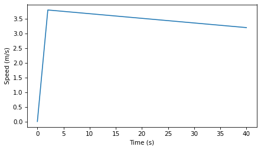
ds = np.cumsum(vs)
plt.plot(ts, ds)
decorate(xlabel="Time (s)", ylabel="Distance (m)")
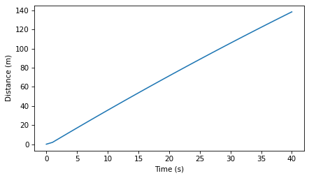
ds[-1], circumference / 2
(np.float64(138.40000000000003), 115.61)
mask = ds < circumference / 2
ts = ts[mask]
ds = ds[mask]
thetas = ds / radius
thetas[-1]
thetas.shape
(33,)
plt.plot(ts, thetas)
decorate(xlabel="Time (s)", ylabel="Angle (radian)")
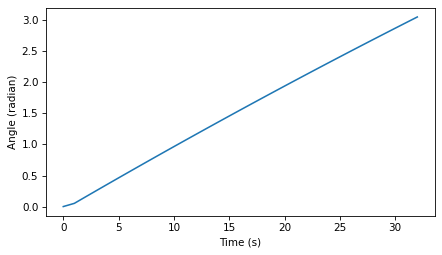
def polar_to_cartesian(r, theta):
"""Convert polar coordinates (r, theta) to Cartesian (x, y)."""
x = r * np.cos(theta)
y = r * np.sin(theta)
return x, y
position = np.column_stack([xs, ys])
position.shape
(33, 2)
for vector in position:
x, y = vector
plt.plot(x, y, ".", color="C2")
plt.axis("equal")
decorate(xlabel="x position (m)", ylabel="y position (m)")
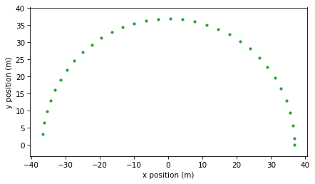
from utils import underride
def scatter(vectors, start=0, end=None, **options):
underride(options, s=6)
xs, ys = vectors[start:end].transpose()
plt.scatter(xs, ys, **options)
scatter(position, end=5, s=10, color="C2")
plt.axis("equal")
decorate(xlabel="x position (m)", ylabel="y position (m)")
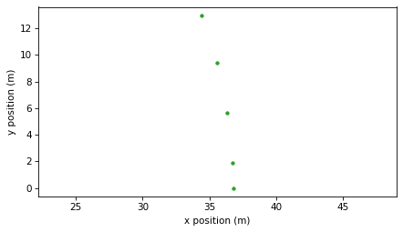
def quiver(vectors, origin=None, start=0, end=None, **options):
"""Plot a set of vectors.
vectors: list of vectors or array with one row per vector
origin: list of vectors or array with one row per vector
start: integer slice index
end: integer slice index
options: passed to plt.quiver
"""
vectors = np.asarray(vectors)
underride(
options,
angles="xy",
scale_units="xy",
scale=1,
color="C0",
alpha=0.6,
)
if origin is None:
origin = np.zeros_like(vectors)
else:
origin = np.asarray(origin)
us, vs = vectors[start:end].transpose()
xs, ys = origin[start:end].transpose()
plt.scatter(xs, ys, s=0)
plt.scatter(xs + us, ys + vs, s=0)
plt.quiver(xs, ys, us, vs, **options)
quiver(position, end=5, color="C2")
plt.axis("equal")
decorate(xlabel="x position (m)", ylabel="y position (m)")
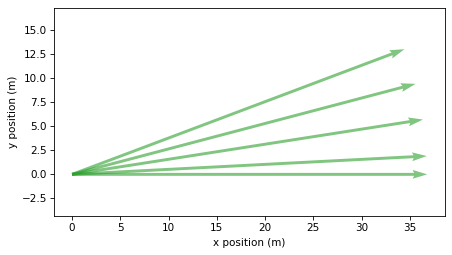
dts = np.diff(ts)
velocity = np.diff(position, axis=0) / dts[:, None]
velocity.shape
(32, 2)
quiver(position, end=5, color="C2")
quiver(velocity, position, end=4, color="C1")
plt.axis("equal")
decorate(xlabel="x position (m)", ylabel="y position (m)")
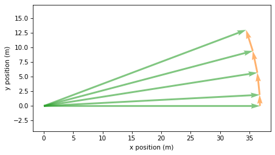
quiver(velocity, end=5, color="C1")
plt.axis("equal")
decorate(xlabel="x velocity (m/s)", ylabel="y velocity (m/s)")
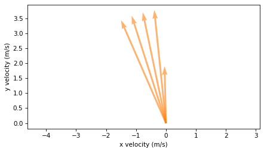
from numpy.linalg import norm
speeds = [norm(vector) for vector in velocity]
speeds = norm(velocity, axis=1)
speeds.shape
(32,)
vs = velocity_linear(ts)
plt.plot(ts, vs, label="Linear Interpolation")
plt.plot(ts[:-1] + 1, speeds, "o", label="speeds")
decorate(xlabel="Time (s)", ylabel="Speed (m/s)")
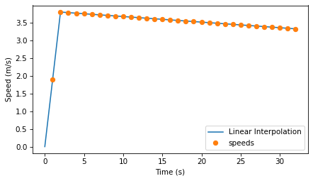
acceleration = np.diff(velocity, axis=0) / dts[1:, None]
end = 7
quiver(velocity, position, end=end, color="C1")
quiver(acceleration * 10, position[1:], start=1, end=end, color="C3")
plt.axis("equal")
decorate(xlabel="x position (m)", ylabel="y position (m)")
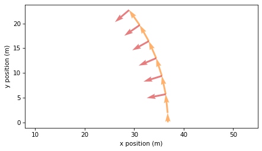
quiver(velocity, end=7, color="C1")
quiver(acceleration, velocity, end=6, color="C3")
plt.axis("equal")
decorate(xlabel="x velocity (m/s)", ylabel="y velocity (m/s)")
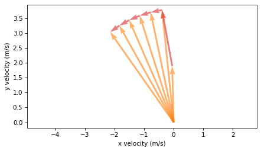
A = position[3]
C = position[4]
B = C - A
quiver([A, C], color="C2")
quiver([B], color="C1")
quiver([B], [A], color="C1")
plt.axis("equal")
plt.text(30, 6.2, "A")
plt.text(27, 11.3, "C")
plt.text(0.8, 1.8, "B")
plt.text(33, 10.1, "B")
decorate(xlabel="x position (m)", ylabel="y position (m)")
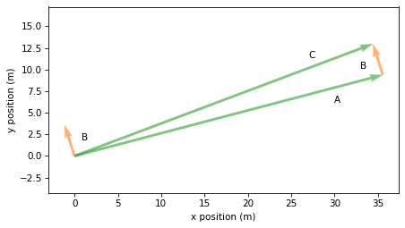
TODO: Multiply by dts
A = position[0]
C = position[-1]
D = np.sum(velocity, axis=0)
quiver([A, C], color="C2")
quiver([D], [A], color="C1")
plt.text(30, -0.8, "A")
plt.text(-30, 1.6, "C")
plt.text(0, 2, "D")
decorate(xlabel="x position (m)", ylabel="y position (m)", ylim=[-2, 7])
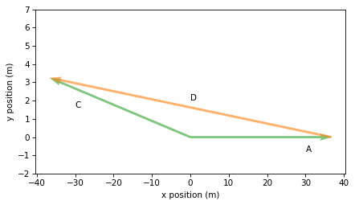
Copyright 2025 Allen B. Downey
Code license: MIT License
Text license: Creative Commons Attribution-NonCommercial-ShareAlike 4.0 International